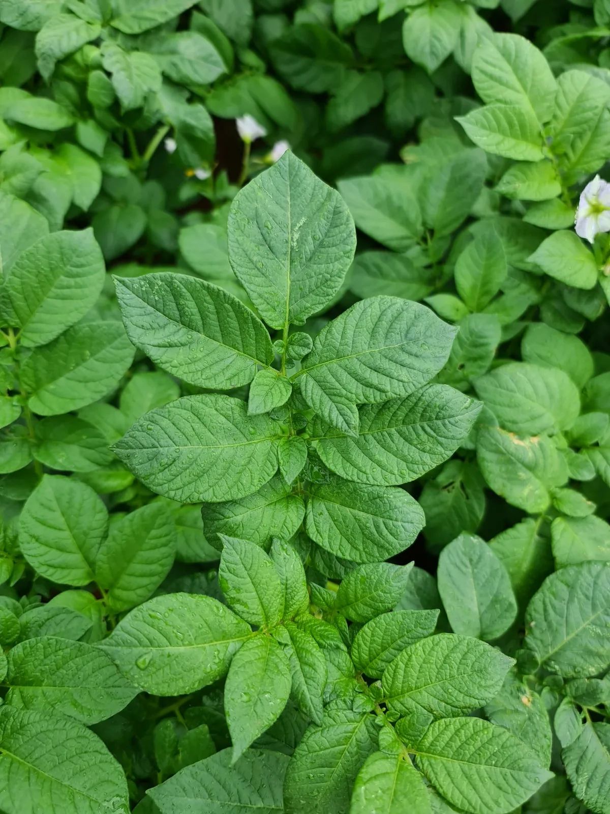

Working product sheet
The draft product summary and staged analysis, with the outstanding review checks. Not a label, SDS or recommendation.
Download review sheet
Nutri-Core NP supplies Nitrogen and Phosphorus together in a liquid fertiliser.
The staged material describes starter and growing-season contexts where the crop needs both Nutrients.
Liquid Nitrogen and Phosphorus nutrition.
Indicative cached list pricing for this preview, not a current quote. Confirm your price and supply with the team.
Select a pack to review pricing and quantity.
Working product draft. Product details, application guidance and documents remain subject to technical review before publication.
Nutri-Core NP supplies Nitrogen and Phosphorus together. The combination can be considered at establishment or during growth when soil and crop information identify a requirement for both Nutrients.
The liquid formulation provides foliar and irrigation options as well as a starter use. Starter placement needs its own recommendation: a product used at establishment is not automatically suitable for direct contact with seed.
This product may be suitable for what your crop needs now. As always, test, don’t guess. Your results help us work out whether it is appropriate, or whether a liquid, dry or granular prescription blend would better address specific Nutrient shortages or imbalances.

The dashboard’s Product Analysis is the composition reference for this draft. The recorded figures and basis are shown where a product-specific source is available.
These are the governed dashboard staging figures, not a batch analysis or an approved website declaration. Tom’s product review and the current label and safety-document checks remain outstanding.
Basis: % w/v. Product formulation and application directions are separate checks. A staged figure does not establish a suitable rate or crop response.
| Nutrient / constituent | % w/v |
|---|---|
| Nitrogen N | 11.060 |
| Phosphorus P | 16.240 |
| Potassium K | 0.016 |
| Carbon CAdditional constituent | 2.658 |
Zero entries are not declarations of absence. Display rounding does not imply measurement accuracy. Carbon is listed separately from mineral Nutrients.
This page uses the master dashboard staging record for this named product, with existing pack photography and cached catalogue pricing. Staged content does not establish current stock, a customer price, a released label revision or approval to apply the product.
Some source details remain open. Product-specific questions are retained in the internal review register.
Tell the team the crop stage and how the product would be applied. Confirm starter placement separately from a foliar or irrigation application.
Bring the test results you already have and tell us how you apply products. The team can review the requirement and the current directions with you.
The method needs to suit this product, your equipment and the crop. A pack size or a composition table does not establish how the product should be applied.
Confirm the crop stage, growing conditions and application method with the agronomist before settling on a rate.
Application rates, water volume, timing and repeat applications need the current product directions and a crop-specific recommendation. No application calculator is enabled in this draft.
Historical and staged rate references are retained in the internal product review register. They have not been turned into directions for every crop or application method.
Use the current Nutri-Core NP label and advice from the team. Compatibility must be checked for the products and application method involved; do not assume that different Hybrid-Ag products can be mixed.
Ask for the current label and Safety Data Sheet before handling the product. Follow the product-specific storage, transport and handling directions rather than a general instruction copied from another product.
Download the working reference for review. Ask the team for current product directions and safety documents.
The draft product summary and staged analysis, with the outstanding review checks. Not a label, SDS or recommendation.
Download review sheetAsk for the current Nutri-Core NP label. Existing pack photography does not establish its released revision.
Request product labelAsk the team to confirm the current document for this product before handling it.
Request current SDSTell us what you are growing and what you want to achieve. We can discuss a prescription blend, whether Nutri-Core NP is appropriate, and pricing and supply.